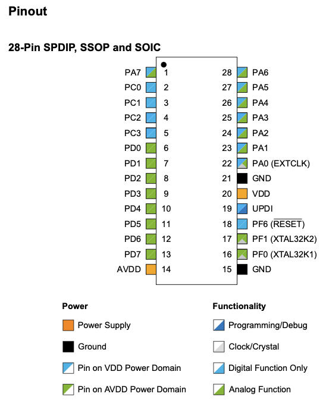

La nueva generación
La última novedad fue en el 2020 con la nueva incorporación de la familia AVR Dx, algunos lo llaman AVR modernos, existen un buen puñado de estos; DA/DB/DD/DU y otros más, por eso el nombre Dx. Me decanté por el AVR DA como una excelente evolución y reemplazo del mítico ATmega328P (sin soporte USB, para eso está el AVR DU). Para compilar podemos seguir usando él avrdude sin problemas, pero debe ser la última version posible.
Los registros y algunas lógicas de configuración de la nueva familia AVR Dx son diferentes, y para eso Microchip ha sacado una documentación que explica como migrar acompañado de bastantes ejemplos escritos en C.
Librería que usa el avrdude que está en el repositorio avr-libc que es de la misma gente, ya tiene soporte para la familia AVR Dx, o también se puede utilizar sobre el microcontrolador un framework como Arduno llamado DxCore sobre él Arduino IDE 1.x que funciona bastante bien. Para programarlo existe una nueva forma y mucho más simple que el clásico ISP, esta es UPDI que significa Unified Program and Debug Interface, solo basta con un CH340 y un puñado de componentes.

Llevo un tiempo usando el AVR128DA28 (Versión DIP) y el AVR128DA48 (Versión SMD) entre muchos otros, programarlo no es igual que el ATmega328P porque los registros son diferentes, consulte el Datasheet del AVR-DA, es más avanzado, pero aún queda mucho para que la comunidad vaya publicando ejemplos prácticos de cómo por ejemplo usar un I2C / TWI para un IC en particular, de todos modos Microchip esta poco a poco publicando códigos fuentes de ejemplo en GitHub, igual no hay que dejar de visitar el Foro para los Freaks de AVR.
Microchip tiene publicada una serie de documentos muy didacticos y detallados de cada funcionalidad:
- AVR® Instruction Set Manual
- Datasheet del AVR-DA
- Generating PWM Signals Using TCD with High-Frequency Input
- Getting Started with Analog-to-Digital Converter (ADC)
- Getting Started with Configurable Custom Logic (CCL)
- Getting Started with General Purpose Input/Output (GPIO)
- Getting Started with Real-Time Counter (RTC)
- Getting Started with Serial Peripheral Interface (SPI)
- Getting Started with Timer/Counter Type A (TCA)
- Getting Started with Timer/Counter Type B (TCB)
- Getting Started with Timer/Counter Type D (TCD)
- Getting Started with Universal Synchronous and Asynchronous Receiver and Transmitter (USART)
- Internal High-Frequency Oscillator Calibration Using the Auto-Tune Feature
- Migration Guide
- Using 10-Bit DAC for Generating Analog Signals
- Using 12-Bit ADC for Conversions, Accumulation, and Triggering Events
- Using ZCD to Implement Special Functions